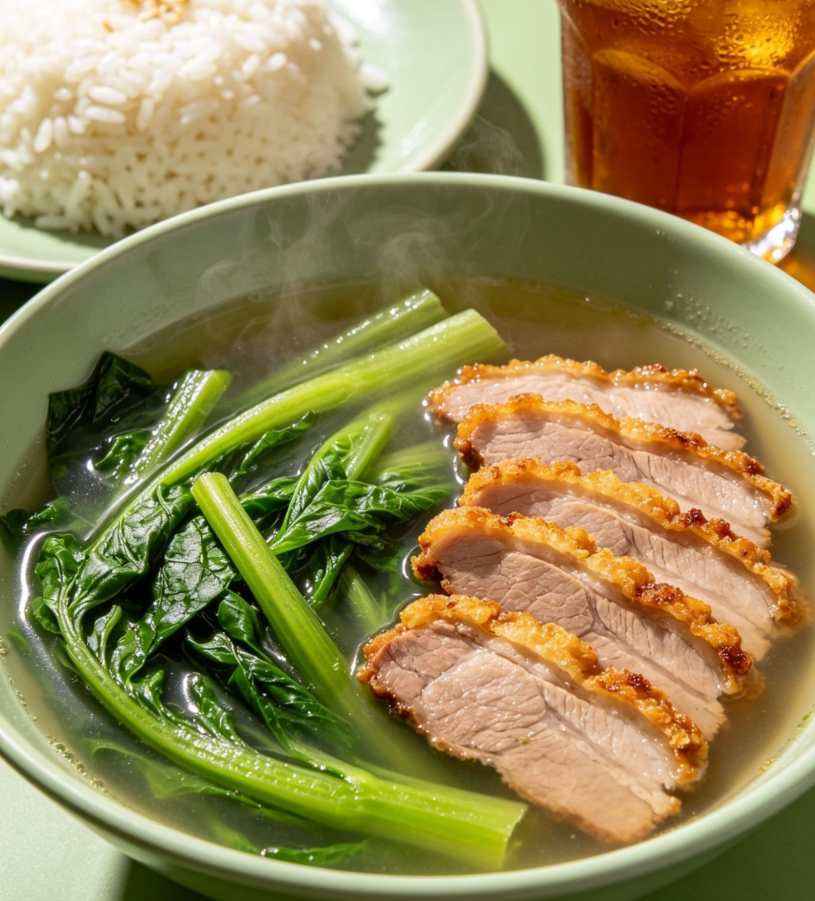

Manfaat Menyebut Nama Allah Saat Hendak Makan & Minum
Makan dan minum adalah kebutuhan dasar setiap makhluk hidup. Setiap hari kita melakukannya berkali-kali untuk mengisi tenaga dan menjaga kesehatan tubuh.

Namun bagi seorang muslim, kegiatan sederhana ini bukan sekedar proses memenuhi perut, melainkan sebuah kesempatan untuk mendapatkan pahala, keberkahan, dan perlindungan, cukup dengan satu amalan ringan: mengucapkan Bismillah atau menyebut nama Allah SwT. saat hendak makan dan minum.
Rasulullah ﷺ bersabda:
"Apabila salah seorang di antara kalian makan suatu makanan, maka hendaklah ia mengucapkan 'bismillah (dengan menyebut nama Allah)'. Jika ia lupa di awal makan, maka hendaklah ia mengucapkan 'bismillah fi Awwalihi wa akhirihi (dengan menyebut nama Allah di awal dan di akhir makan).'" " HR. Abu Daud & Tirmidzi.
Ternyata, di balik kalimat pendek ini tersimpan banyak manfaat besar, baik dari sisi ruhani, kesehatan, maupun perlindungan. Berikut rinciannya:
1. Mendatangkan Keberkahan pada Makanan & Minuman
Ini adalah manfaat yang paling utama. Makanan yang sama, jumlah yang sama, rasa yang sama, tapi saat dimulai dengan menyebut nama Allah, nilainya berubah total.
Dengan Bismillah, Allah memberkahi rezeki yang kita terima, sehingga meski makan dalam porsi sederhana, hati menjadi puas, tubuh kuat, dan energi yang dihasilkan menjadi maksimal. Sebaliknya, makan tanpa menyebut nama Allah, rasanya kenyang tapi hati tetap kosong dan cepat lapar kembali.
“Sesungguhnya setan akan mendapatkan makanan yang tidak disebut nama Allah...” HR. Muslim.
2. Benteng Perlindungan dari Gangguan Syetan
Tahukah anda? Syetan selalu mengintai saat kita makan dan minum.
Dalam hadits riwayat Muslim, Rasulullah ﷺ menjelaskan:
"Jika seseorang menyebut nama Allah ketika hendak masuk rumahnya dan ketika hendak makan, maka setan berkata: 'Kalian (bangsa setan) tidak bisa menginap dan tidak bisa makan! ' Jika seseorang tidak menyebut nama Allah ketika hendak masuk rumahnya, maka setan berkata: 'Kalian bisa masuk dan bisa menginap.' Jika seseorang tidak menyebut nama Allah sewaktu hendak makan, maka setan berkata: 'Kalian bisa menginap dan makan malam.'"
Jadi, Bismillah adalah kunci pintu yang membuat syetan tidak berhak ikut menikmati rezeki yang Allah berikan kepada kita.
3. Menjadikan Makan Minum Sebagai Amal Ibadah
Banyak orang mengira ibadah itu hanya shalat, puasa, atau zakat. Padahal segala hal yang kita lakukan bisa jadi pahala besar, asal diawali dengan niat dan menyebut nama Allah.
Saat anda ucapkan Bismillah, dan anda berniat: "Ya Allah, aku makan ini karena Engkau yang memberi, aku pakai tenaganya untuk taat kepada-Mu." Maka kegiatan yang tadinya sekedar kebutuhan biologis, berubah menjadi amal saleh yang dicatat malaikat. Sungguh rugi kalau kesempatan ini dilewatkan!
4. Berdampak Positif bagi Kesehatan Fisik & Jiwa
Secara medis dan psikologis, menyebut nama Allah saat makan membawa efek menenangkan. Saat kita melafalkan kalimat yang penuh ketenangan ini, detak jantung menjadi teratur, pikiran fokus, dan sistem pencernaan bekerja lebih baik karena kondisi hati yang tenang.
Selain itu, dengan mengingat Pencipta, kita menjadi sadar diri: tidak makan berlebihan, tidak boros, dan merasa cukup. Ini sangat bagus untuk mencegah penyakit obesitas, gangguan lambung, dan hati yang serakah.
5. Mengikuti Sunnah Rasulullah ﷺ & Mengikuti Teladan yang Baik
Rasulullah ﷺ bersabda, "Mendekatlah wahai puteraku! Sebutlah nama Allah (membaca basmalah), makanlah dengan tangan kananmu, dan makanlah makanan yang ada di dekatmu!" Shahih: Ibnu Majah, 3267.
Bagaimana Jika Lupa?
Kadang kita terburu-buru atau sudah terbiasa, sampai mulut sudah mengunyah baru ingat. Jangan khawatir! Rasulullah ﷺ memberikan jalan keluar yang mudah: ucapkan ini saat teringat: "bismillah fi Awwalihi wa akhirihi". Insya Allah keberkahan tetap menyertai sampai suapan terakhir.
Satu kata pendek: Bismillah.
Sangat ringan diucapkan, tidak butuh biaya, tidak butuh tenaga, tapi manfaatnya besar:
- Mendatangkan berkah
- Menghalau syetan
- Mengubah kebutuhan jadi pahala
- Menenangkan jiwa dan raga
Mulai hari ini, jadikan kebiasaan: Setiap suapan, setiap tegukan, selalu bermula dengan menyebut Nama Allah.